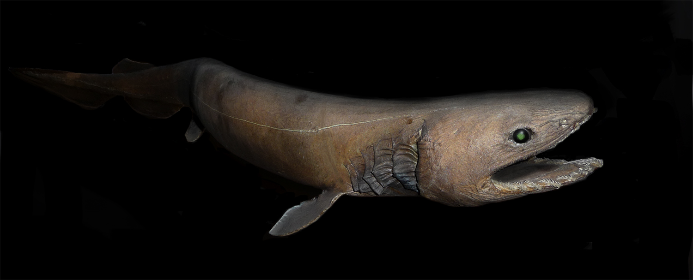
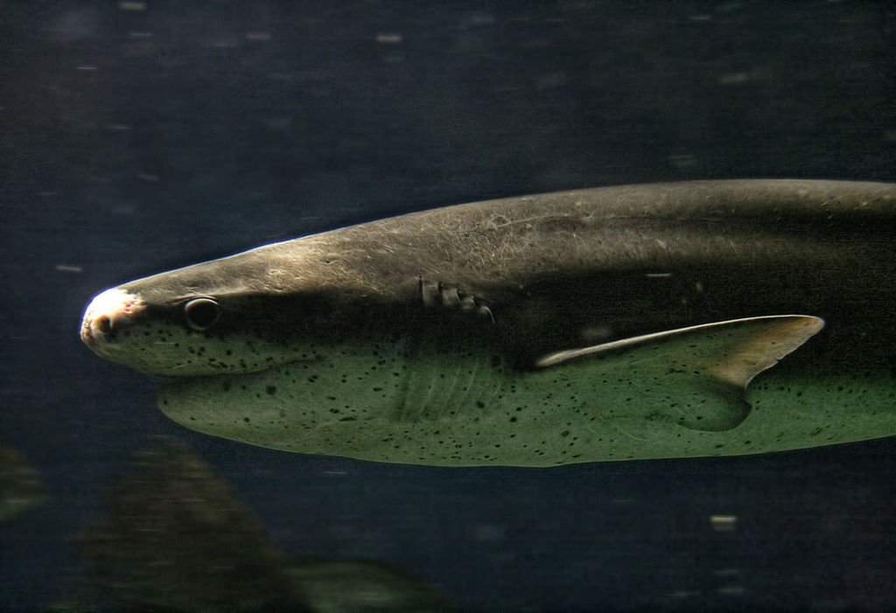

VOLVER
ORDEN
HEXANQUIFORMES
tiburón anguila
chlamydoselachus anguineus
Derechos de atribución de fotografías
author-page-licence
Citron
Wikipedia
CC BY-SA 3.0

Un auténtico fosil viviente. Puede habitar en un rango de entre 50 m y mas de 1500m .Puede llegar a medir unos cuatro metros.Se alimenta de cefalópodos y otras especies de tiburones laUICN lo considera especie amenazada .Aunque por las profundidades en las que hábita y lo extraño de sus hábitos no se puede asegurar con toda certeza.
tiburón vaca
Notorynchus cepedianus
Derechos de atribución de fotografías
author-page-licence
José María Pérez Nuñez
Wikipedia
CC BY-SA 2.0

Es uno de los dos únicos tiburones que se caracterizan por tener siete branquias. Llega a medir 3 metros de largo .Caza tiburones, rayas,peces y focas.
tiburón cañabota
hexanchus griseus
author-page-licence
Harbor Branch Oceanographic Institution
Wikipedia
Public Domain

La cañabota gris llega a medir 4.8m de longitud y pesar mas de 1000kg.El mayor ejemplar fué capturado en las costas de Alicante(España).Con sus seis aperturas branquiales, nos dice que es un escualo muy primitivo como el resto de su misma orden dentro de los hexanquiformes.Los escualos más evolucionados poseen solo 5 hendiduras branquiales.
VOLVER